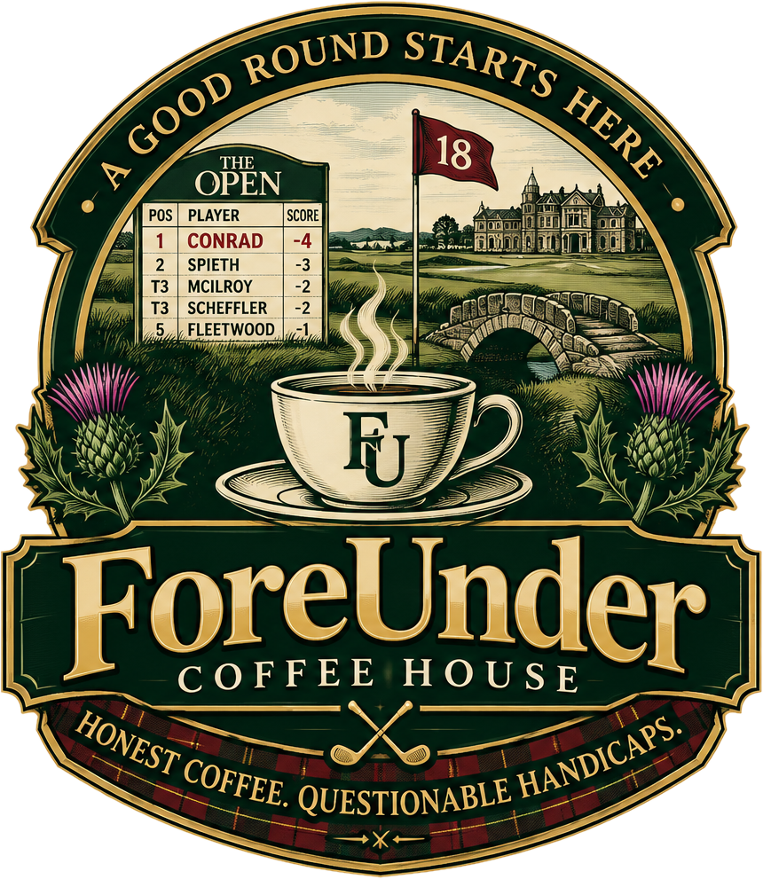

Print at 100% (actual size, not "fit to page") with background graphics on. Each print is 3¼ × 3¼ in. The background runs ⅛ in past the design on every side, so you can cut anywhere in that band and it still looks right: aim for the outer edge and you have about ⅛ in of room for a wobbly cut. Six per sheet. Peel the coaster's protective film, lay the print face-down on the center of the coaster's back (so it reads through the top), and tape over all four edges with clear packing tape, pressing from the center out so no bubbles sit over the QR code. Keep the tape off the corners where the bumper feet go.
